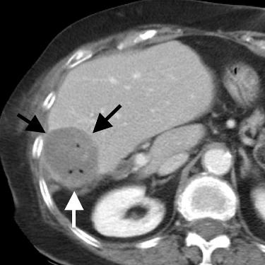

Jeffrey P. Guenette / Scientific Publications
Radiofrequency ablation of colorectal hepatic metastases
Guenette JP, Dupuy DE
J Surg Oncol. 2010;102(8):978-87
Publication Access via PubMed
 Abstract:
Radiofrequency ablation (RFA) may be performed intraoperatively, laparoscopically, or percutaneously. The percutaneous
approach is associated with the least procedural risk and may be performed under local anesthesia. Percutaneous RFA should
be considered a primary treatment option for patients with unresectable hepatic tumors or conditions that prohibit general
anesthesia or abdominal surgery. Continually improving thermal ablation and imaging technologies are likely to further
increase tumor ablation efficacy and expand its role in treatment of hepatic metastases.
Return to Home Page